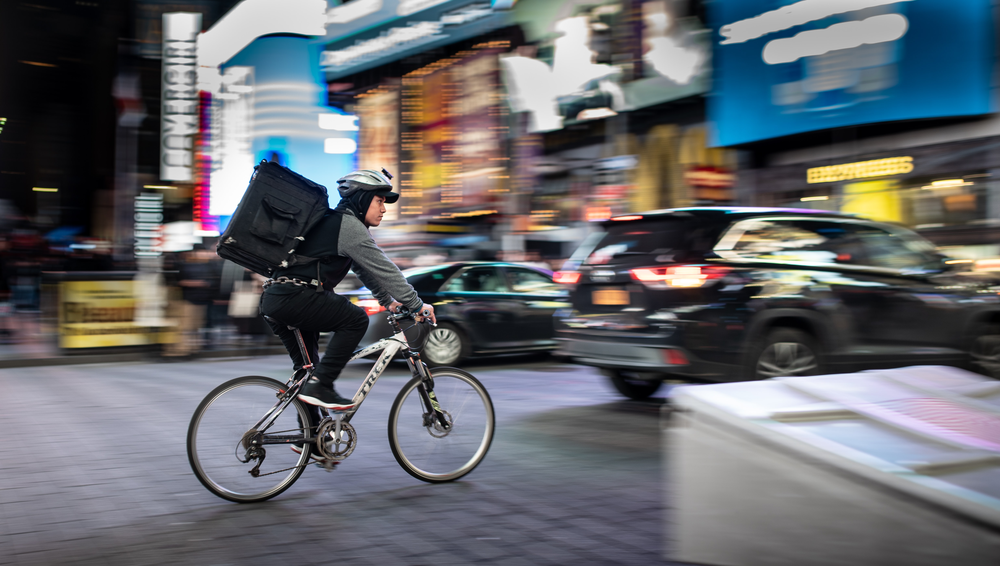

나의 창업아이디어는 '위치정보기반 다회용기 순환시스템'입니다.
정부는 중장기적인 일회용품 감소정책을 펼치고 있습니다. 2030년까지는 배달에서의 일회용기를 ‘재질 단일화’ 또는 ‘다회용기 사용’으로 대체한다고 합니다. 하지만 다회용기를 사용하게 되면 그림과 같이 라이더의 노동력이 2배 증가하여 배달팁이 증가하고, 이는 자영업자와 소비자들의 부담으로 이어집니다.
배달팁 문제를 해결하기 위해서, 저희 서비스는 수거 시 같은 크기의 용기를 쓰는 업체 간 용기를 공유하여 배달팁이 1.5배 이상 증가하는 것을 방지합니다. 배달음식점에 표준화된 용기를 제공하고, 용기에 내장된 QR코드에 위치데이터가 저장되어 용기 크기와 배송지 정보를 음식점과 라이더에게 전달합니다. 카카오택시와 같은 배차시스템으로 음식점과 배송지에서 거리가 가까운 라이더에게 콜을 우선 배차합니다. 라이더는 ‘배달’콜과 ‘수거’콜을 배달통의 용량에 맞게 선택할 수 있습니다.
자세한 설명은 블로그에서 확인할 수 있습니다.